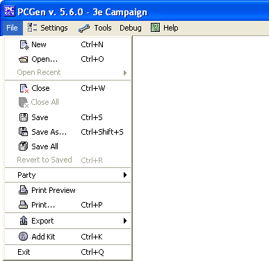
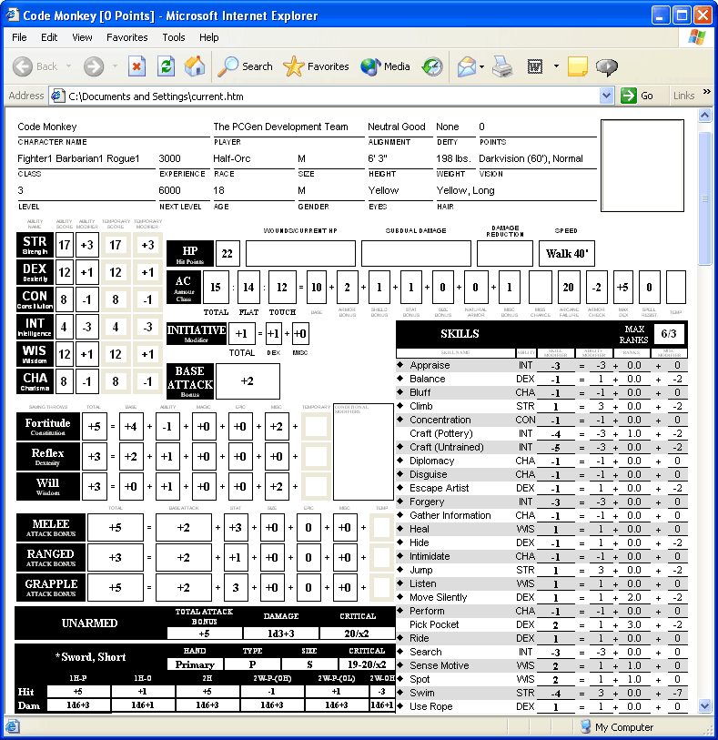
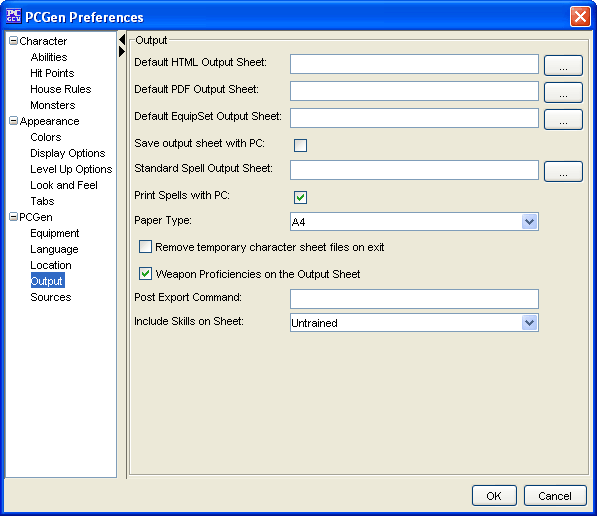

Use File>Print Preview or use the Print Preview icon in the button bar to display the character sheet.

Check it in your browser and select print if happy. Otherwise close the browser screen, make changes in PCGen and then preview it again.

The sheet displayed is determined by the settings held in Settings > Preferences

The PCGen>Output area determines what sheet is used. Click on the ... button to select a different sheet.
